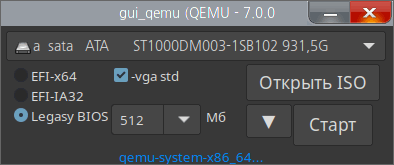

GUI_Qemu_Linux
Назначение
Для теста загрузчика и ISO файлов.

gui_qemu - оболочка для виртуальной машины qemu
Передаёт виртуальной машине qemu несколько параметров, чтобы облегчить тест загрузчиков USB или образов файлов. Для работы необходимо установить пакет qemu-kvm.
----------------------------------
Активируйте "Создать ini", чтобы программа помнила настройки
настройки в ini содержат следующие параметры:
задаёт исполняемый файл, которому передаётся ком-строка (по умолчанию kvm)
bin = kvm
; bin = qemu-system-x86_64
3 параметра шрифтов, где Font1 - моноширинный шрифт для раскрывающегося списка, чтобы выровнять по столбцам.
Можно добавить параметры ком-строки qemu в ini-файл, например: opt_hdd = -full-screen
Секция [iso] содержит пути к iso-файлам, то есть открыв iso-файл 1 раз нет необходимости искать образ впоследствии, теперь он есть в списке при каждом запуске программы.
При выборе ISO-файлов допустим множественный выбор, т.е. можно добавить сразу десяток ISO в список.
----------------------------------
при тесте в строку состояния возвращается список передаваемых параметров (ком-строка), но сокращённого вида, т.е. в ней пути заменяются на path и isopath. Кликнув на строку в буфер обмена возвратится полная строка для использования в терминале.
кратко о параметрах:
-m 1024 - память выделяемая виртуальной машине
-vga std - стандартный vga-драйвер
-boot c - порядок загрузки устройств, имеет смысл, если на виртуальной машине есть например загрузочный CD и HDD, то с какого из них будет идти загрузка, в данном случае начинаем загрузку с жёсткого диска (c=HDD, d=CD-ROM, n=network, a=floppy)
-drive file=/dev/sda,cache=none - в качестве "file" указывается устройство HDD или путь к ISO
-L path - здесь указывается рабочая папка, чтобы не указывать полный путь к файлам биоса efi64.bin (BIOS, VGA BIOS и keymaps)
-bios efi64.bin - задаёт файл биоса.